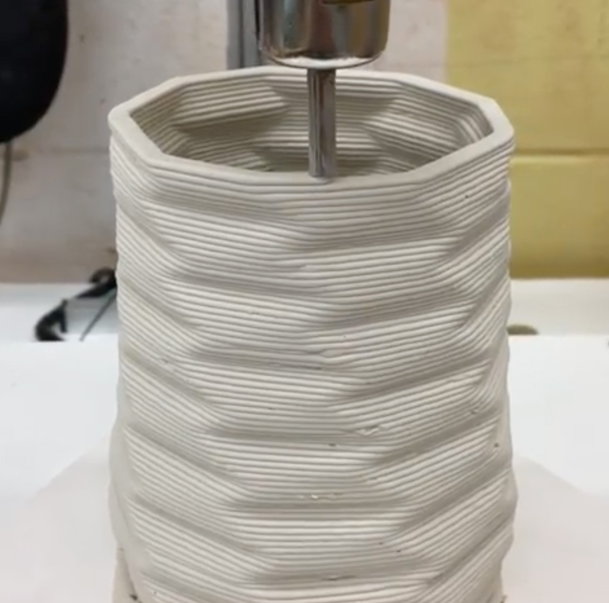
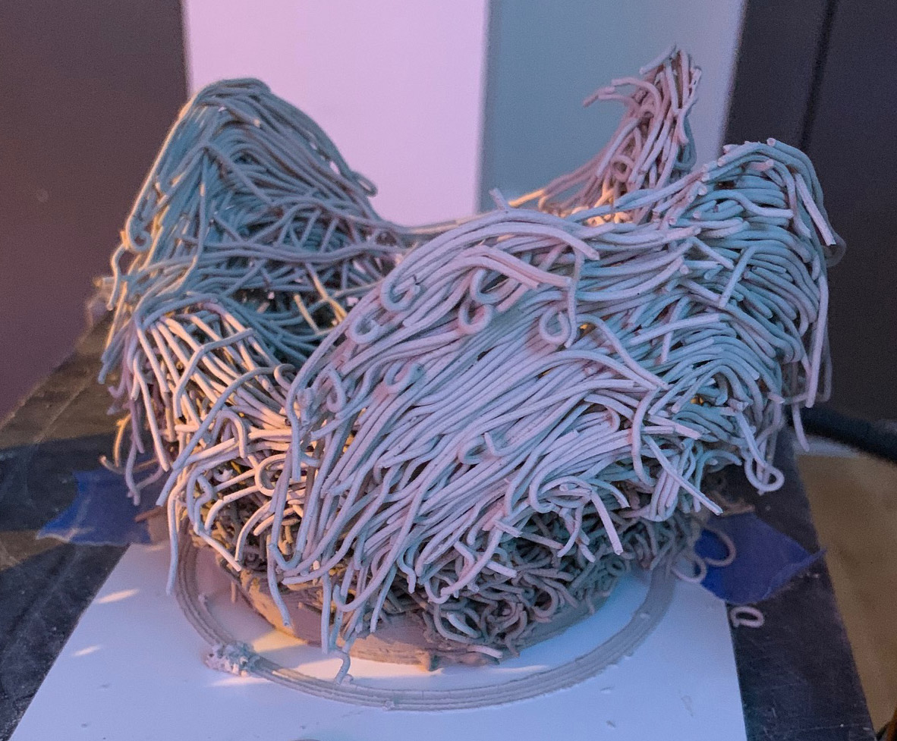
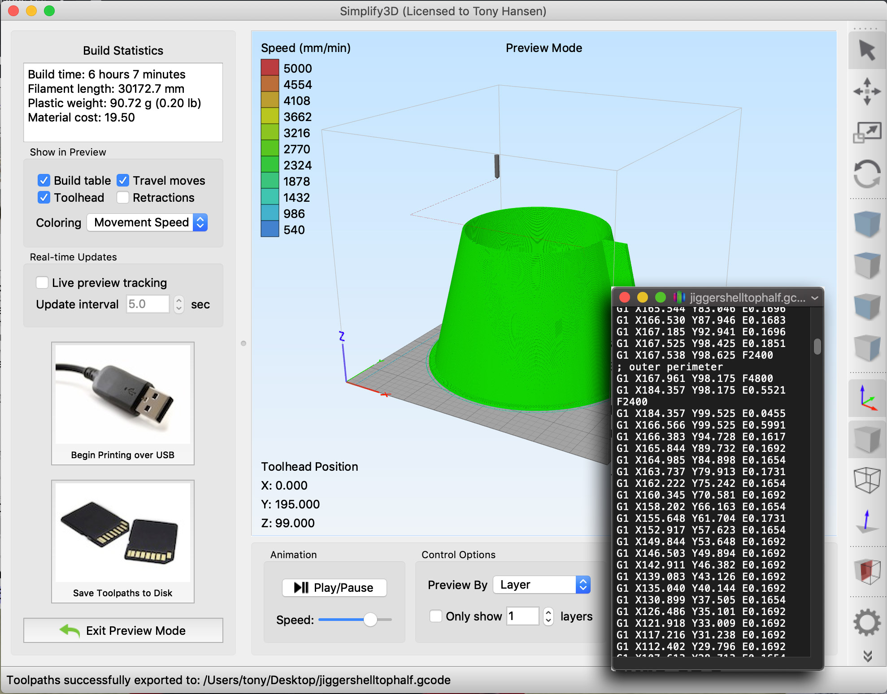
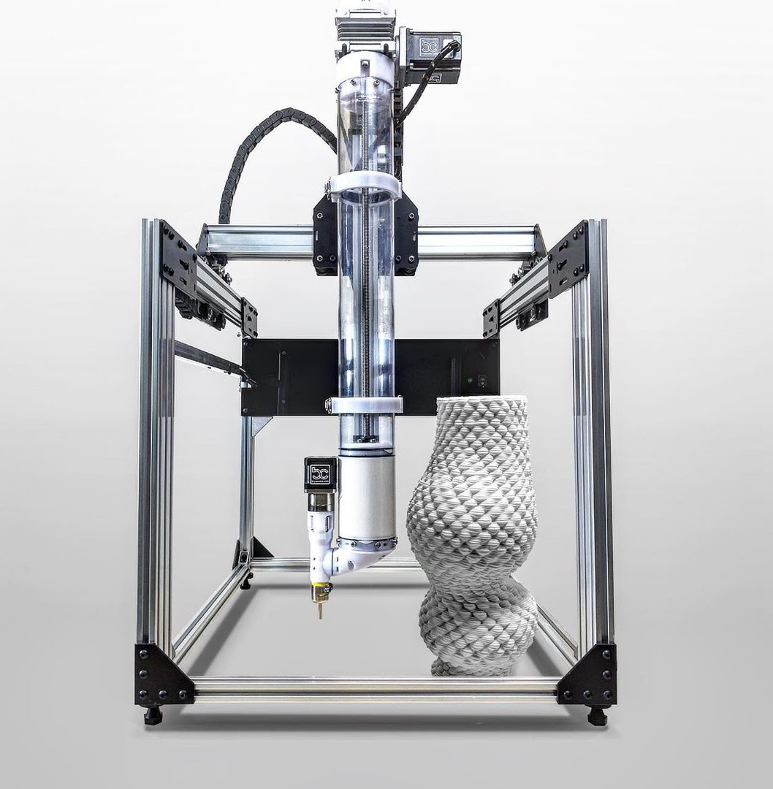
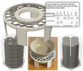

3D Printing Clay
Clay for 3D printing. People are getting carried away with the technology and forgetting the common sense things relating to the clay.
Key phrases linking here: 3d 3d-printed clay, 3d printing clay - Learn more
Details
3D printers that can extrude a clay paste are available now. These are known as MEX printers, the traditional ceramic industry is surprisingly mature and making great strides into large-scale manufacture using them. While other technologies do exist (e.g. SLA, SLS), paste extrusion is pervasive (where objects are formed by layering from a nozzle). These are additive processes (as opposed to subtractive where material is cut away from a block).
There are multiple worlds of ceramic 3D printing. The lowest, which potters have access to, are inexpensive and slow FDM machines that squirt paste made from the same clays traditionally used (these present obvious challenges because the super soft clay does not hold up well and is difficult to make). Industrial MEX machines employ powder and paste deposition methods of traditional clay but utilize a wide range of additives to vastly increase speed and precision. Companies are developing the process so well that almost any powder can be made into a paste (with appropriate additives like deflocculants, binders, polymers, uV sensitive resins) and printed, even in extreme shapes with high detail. There are already things that cannot be done any other way (e.g. pieces that have complex interior channels, infills, molds for investment casting incredibly complex shapes, even complex multilayering to achieve optic properties). Even metal powders can be printed and fired - with enough precision that tiny turbines can spin at 500k RPM! There is another world: Pure powders (especially alumina and silica) are being incorporated into solvent-resin uV sensitive carriers and cured with light to harden as printed. Despite high solids content, the pastes are not viscous, powders are so super-fine they do not settle, there is sufficient carrier to enable green strength for further processing of parts. For some methods there are claims that burn out during sintering to 1600C produces almost no shrinkage while yielding a dense part. Companies are directly printing investment casting molds from fused silica powder (just pour in the molten metal and break off the 3D print after it hardens). A fast-growing area is also dental, pure alumina teeth are being made.
While we are primarily interested in consumer MEX devices here, knowing about what industry is doing is valuable. For example, if you want to experiment with light-curing of pastes, uV resin (by the gallon) and lamps are inexpensive on Amazon. Back to the current reality - at first, it appears that a typical consumer clay-paste 3D printer is just a tiny pugmill moving around squirting out jello-consistency goop, hoping that it will stand up! But people are getting this to work anyway (e.g. by sticking to more vertical and flat shapes, printing slowly, and having a fan blow on pieces as they are being printed). Various practitioners provide a steady flow of pieces showcasing what is possible, they are a testament to what can be done with goop! It appears that as long as the layer height and flow rate calibrated correctly the compression of the layers is enough to make almost any clay bond. While some prefer wetter or stickier clay, for others it has more resistance being extruded and can create messier lines. Additive A and cellulose are commonly used.
Some users and suppliers are augmenting water with alcohol (e.g. ethanol is preferred over isopropyl alcohol because it carries off more water as it evaporates). Pure ethanol is flammable and clay plasticity and dry strength are poor (but a 50:50 water:ethanol is not flammable and workability can be sufficient). However, even though the clay feels cold evaporation does not proceed that quickly, it still needs a fan to stiffen up fast enough. Fortunately, newer paste-extrusion printers are able to operate under greater pressure, thus stiffer clay can be delivered through a flexible pipe to the print head. With fans, and enough extra time between layer delivery, structural integrity is possible.
The RepRap international movement to develop open-source hardware and software platforms for 3D printing helped push the technology into hobby ceramics starting around 2005. Anyone can now buy and assemble a standard filament printer to learn many details of their mechanics and operation. Once understood, a printer of any size could theoretically be constructed (google "retrofit 3D printer for clay" to see how much activity there is). In clay printing the focus is on the print head and how to deliver a thick paste to it and extrude it at a constant rate without air bubbles (flow cannot easily be turned on and off abruptly, it has to flow constantly, thus placing limits on what can be printed). One type of extruder print head has a barrel and auger driven by a stepper motor, as already noted, it is basically a small pugmill, its extrusion nose is the printhead nozzle. Another uses a stepper motor and worm gear to drive a piston to pressure clay into a flexible tube that feeds the printhead. Files can be downloaded to print all the parts to make these.
There is an inertia problem with scaling to a bigger sizes using paste extrusion: The printhead and/or platform must be able to move quickly. Of course, mass must be kept to a minimum to achieve precise and quick movement. But clay is heavy and if the printhead is full it cannot be responsive (e.g. Delta printer designs). These printers must deal with this by pumping the clay from a syringe-like cylinder through a flexible tube that runs to the head. On other printers where the bed must move the problem is even more acute - the quickness of the movement is obviously limited by how heavy and fragile the soft clay on it is (rather like a big cube of jello on a plate being jerked around). Some printers (e.g. those in enclosed cases) have beds that move up and down (the Z axis). That means the X and Y are in the head - these thus have potential for clay.
Commodity printers designed for clay are appearing with increasing frequency. A potter could easily spend $10k - but use caution, the laws of physics and common sense apply. Machines have differing priorities. Lutum and WASP machines push clay through a flexible tube to a tiny pugmill in the printhead. The PotterBot is moving the entire piece being printed (on the x-y axes). The only solution is often to simply print very slowly. Many are shocked when they realize that even normal printing time for a large piece could be days!
Don’t be stuck with a fancy machine and no clay that works with it. Manufacturers are making cartridges to work in their machines aimed at traditional ceramics, claiming the clay to be soft, bubble-free (avoiding the mini-explosions that happen when air bubbles find their way to the nozzle!). The advantage will be more stable & repeatable performance and a ready-to-use product with good strand adhesion and plastic strength. Of course, these cartridges are expensive! Individuals will always have the flexibility to make their own clay bodies. 3D printable clay has no secret recipe, its utility lies in consistent stiffness and no particulates or bubbles. A good cone 6 porcelain starting recipe is L3778D. Zero4 fritware porcelain is another option, this enables much lower firing temperature without loss in strength. Both of these bodies are plasticized using Veegum, experiment with its percentages to optimize the paste ("optimize" might not be the right word, perhaps the best you can hope for is a clay that can be tolerated). More Veegum imparts plasticity and stickiness but dries slower and is more difficult to slurry and dewater. Use the slurry-up method to make the paste. A hand extruder can also be used to create the diameter needed to feed the machine. The character and suitability of the body will be a big part of success, understanding the recipe and being able to control it will give you the edge (especially if incorporating alcohol).
Traditional clay suppliers are also producing clays for this. But be skeptical. One of the bodies claims to have 40% 80 mesh grog, however, our testing found no grog! Besides, grog is undesirable since it would wear out the print head quickly or clog it. Another porcelain has 25% water yet claims to have drying shrinkage of 6.5% (this is highly improbable and even if true would make it too non-plastic and fast-drying). Some have shipped in, at considerable cost, non-plastic 3D printing clays and found that the plastic bodies they have used for years work better! When printing takes a long time the bottom and top of a piece are soft and the center gets stiffer, a plastic clay that dries slower is better. In addition, printing overhangs is a big issue - again, plastic clays hold up better.
3D printing methods for advanced materials are being developed constantly. In addition to alumina and silica, companies are working on zircon/zirconia, magnesium, TCP, hydroxyapatite, silicon carbide, tungsten carbide, titanium carbide, boron carbide, silicon nitride, alumina nitride and even iron oxide. However, these tend to be fantastically expensive (both the equipment and pastes or resins), this provides good motivation to develop the process in-house. Common sense applies with these just as with traditional fabrication methods. It is possible to pay $1500 for a litre of material and find that as pieces dry and are fired they can crack and warp just like pottery! Make no mistake, if a product is 20% resin that has to burn out, common sense can predict the kind of problems associated with that!
Related Information
Polar Ice Porcelain for 3D printing

This picture has its own page with more detail, click here to see it.
The stickiness and extreme plasticity of Polar Ice porcelain has enabled many people to use it for 3D Printing. This is a piece being done by Bryan Cera. Polar Ice in plastic form is better than Polar Ice for casting because the former contains much more Veegum. Layers adhere well and pieces can hold up even though the clay may be very soft. We manufacture it in soft form, although it may feel very stiff in the box, open wedging the clay softens markedly and might be suitable if you have a 3D printer that can handle stiffer paste (of course, if the clay is getting old it will be stiffer). The Veegum in Polar Ice slows drying and increases drying shrinkage - be judicious about how fans are set (they should expose all sides to draft). Printing on a piece of plaster is also advisable (it will draw water from the base). If the plastic version of Polar Ice is just too stiff then you might consider mixing the printing paste from the casting version. It will not be as plastic but will dry faster. Adding Veegum will improve its plasticity (but beware of how difficult it can be to slurry up a body containing a lot of it). If you cannot get this body then just make your own using the L3778D recipe.
Here is what happens when an overnight 3D print goes wrong

This picture has its own page with more detail, click here to see it.
From Brooks Talley. At some point during the night the base could not support the layers being added and it collapsed. The printer happily just kept printing in mid air for the rest of the night!
G-Code 3D Printer instructions

This picture has its own page with more detail, click here to see it.
Simplify3D knows how to convert the 3D geometry generated by Fusion 360 into G-Code (shown in the black text window lower right). I have just told Fusion 360 to print this and it automatically launched this and passed the 3D geometry to it. Simplify3D is a "slicer" because it knows how to convert a 3D object into slices that a 3D printer can lay down (one on top of the other). Simplify3D is fairly expensive and competes with a number of free products (like Slic3r, Cura). It gives me a 3D view of the object and enables positioning and rotating it on the bed and configuring dozens of parameters. It is about to deliver the G-Code (via a USB connection) to my RepRap 3D printer (although it is often preferable to use the "Save Toothpaths to Disk" button to generate G-Code and write it to an SDCard which the printer can accept). The black text-edit window shows what the G-Code looks like. It is just text. With hundreds of thousands of commands that mostly move the head to successive X-Y positions and a defined filament feed-rate.
CERA-1 Open Source Clay 3D Printer Extruder

This picture has its own page with more detail, click here to see it.
Bryan Cera designed this in partnership with Amaco/Brent and Duet3D. It is documented and published as open source. And amazing project from an amazing technician and artist.
Inbound Photo Links
|
Dental 3D printing has achieved the holy grail: uV hardening |
 Light-weight 3D printed plate-setters are coming |
Links
| URLs |
https://www.3dwasp.shop/en/category/3d-printers/
Delta Wasp 3D Clay Printers from Italy. They make delta-type printers known for high precision. |
| URLs |
https://vormvrij.nl/lutum/
Lutum 3D Clay Printers (Netherlands). These have a cartesian design with stationary print bed. They claim heavy duty construction & minimal plastic for long life, easy repairs and standard parts. Their devices require compressed air and 110v/220v. |
| URLs |
http://oliviervanherpt.com/functional-3d-printed-ceramics/
Olivier Van Herpt - 3D printer of ceramics |
| URLs |
https://3dpotter.com
3D PotterBot printer - From USA Uses a cardinal axis system, rather than a delta printer configuration. Uses no high pressure hoses, just an overgrown syringe driven by a stepper motor and worm gear. Models from $3500 to $20,000 in 2023. |
| URLs |
https://www.stoneflower3d.com
Stoneflower 3D printer made in Germany. ~$4000 in 2023. |
| URLs |
https://www.imerys.com/product-ranges/ez-print-3d
Imerys EZ-Print cartridges for 3D printing clay Available in “Ready-to-use” rolls and “Plug & Play” cartridges, EZ Print 3D is a range of ready-to-use ceramic feedstocks for 3D printing. |
| URLs |
https://sites.google.com/site/openprojectspage/cera-1-clay-extruder
The CERA-1 3D printer project at sites.google.com by Bryan Cera The CERA-1 is a mechanical paste extruder and 3D printer framework developed for clay 3D printing. It was designed in partnership with Amaco/Brent and Duet3D, it is published here as an open-source hardware project. |
| URLs |
https://www.youtube.com/playlist?list=PLD_uR9vw07u_TAFIN7m5TPE7olhRsBfdR
Ceramic 3D Printing Teaching video series with Jonathan Keep There are five one-hour lectures. They have been honed over the ten years of teaching and personally working with clay 3D printing. |
| URLs |
https://www.rapidia.com/
Metal paste deposition 3D printers This company knows how to formulate slurries with metal powder and add a variety of thickeners, binders, and dispersants to make the paste stable and printable. They can also do this with clay. |
| URLs |
http://www.keep-art.co.uk/Journal/JKeep-Guide%20to%20Clay%203D%20Printing%20-%202020.pdf
78 page PDF: Jonathan Keep's guide to 3D printing with clay - Every detail from someone with years of experience formulating the clays; preparing the pastes; using, calibrating and even making the printers; learning and using 3D software. |
| URLs |
https://dental.formlabs.com/products/form-4b/
The 4 Formlabs 4B printers for dental They support high precision (e.g. many dental applications). |
| URLs |
https://www.fungiakuafo.com/3d-printing-with-mycelium/
Plastic and concrete waste can be mixed with terra cotta clay and mycelium fungi to harden the material. |
| URLs |
https://gaiamultitool.com/
Gaia Multitool Clay 3D printers from Poland A line of professional and custom-made units. All aluminum construction, quickly replaceable parts, suitable for clay pastes, resins, silicones and self-hardening compounds. |
| URLs |
https://www.sio-2.com/gb/content/20-3d-printing-clays-sio-2
SiO2 clays for 3D printing Clays specially designed for 3D printers. They are shipped as a paste suitable for use in a range of 3D printers on the market. They stress the consistency and dependability. They are supplied in 5 kg cylindrical format for easy insertion. |
| URLs |
https://www.grasshopper3d.com/
Grasshopper generative algorithm editor for 3D printing clay Grasshopper® is a graphical algorithm editor tightly integrated with Rhino’s 3-D modeling tools. G-Code is the language understood by 3D printers and CNC machines - slicers produce it. It has commands that directly control the rotation of the stepper motors (thus the path of the nozzle). G-Code editors are used by programmers to make output not possible with 3D editing software. Grasshopper, by contrast, claims to require no knowledge of programming or scripting. |
| URLs |
https://www.amazon.ca/UV-Resin/s?k=UV+Resin
uV Resin for making 3D printing pastes - at Amazon Crystal clear UV curing resin from many suppliers that claim them to be low odor. uV lights are also available. |
| URLs |
https://tethon3d.com
UV curable resins for SLA, DLP from Tethon3D. A wide range of ceramic and oxide ceramic powders, binders and resins. Mullite, alumina, zircon, cordierite, carbon nanotube, stoneware, porcelain, even earthenware. Also the base binders and resins to formulate custom products. The prices clearly show how valued this new technology is (e.g. $1300/ Iiter for zirconia). |
| Glossary |
3D-Printing
Standard 3D printing technology (not printing with clay itself) is very useful to potters and ceramic industry in making objects that assist and enable production. |
| Glossary |
FDM, SLA, SLS, MEX 3D printing technologies
Knowing a little about the main types of 3D printing technologies can help you decide which road to take. |
 PayPal | No tracking, No ads, No paywall, No transient content! Just organized, concise information constantly updated and improved. Was this helpful? Consider supporting me. |
| By Tony Hansen Follow me on        |  |
Got a Question?
Buy me a coffee and we can talk 

https://digitalfire.com, All Rights Reserved
Privacy Policy